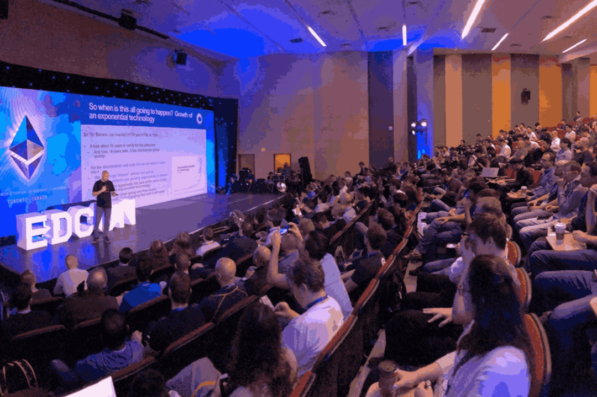

走向世界
▼
▼
在拉美、在非洲、在俄乌战争的难民中，在以太坊社区的团队里，
越来越多的人与我们一起共同思考：
我们是否有机会构建一个数字城邦？
我们如何通过 Network State 缔造新的秩序，保护我们普通人在地缘冲突的不利影响中获得更多的选择？
如何连接 DAO 与 DAO，联结 Network State 的探索者共同协作？
畅想在未来，当我们生活在一个完善、流动的数字城邦中，我们的生活、工作、学习、娱乐可能将会是怎样？
这些议题不止 SeeDAO 中的我们在思考，
在 Network State 的全球思潮下，
无数人与我们一样
正在实践。
而此刻，我们有机会遇见他们，并通过筹办一次 DAO Conference 融入这一场全球思潮：

 也就在最近，EDCON (Community Ethereum Development Conference) 也敲定：2023年的大会，就在黑山于 5.19-5.23 举办，Vitalik 确认出席。
也就在最近，EDCON (Community Ethereum Development Conference) 也敲定：2023年的大会，就在黑山于 5.19-5.23 举办，Vitalik 确认出席。 五月的黑山沐浴在初夏的阳光中，人头攒动，来自全球各地的开发者、探索着涌向此处，畅所欲言着在对美国这般大型主权国家的批判
——这也是 Denver 所说不了的。
如果我们有机会在这般盛会中筹办一场 DAO Conference，探讨全球 DAO/Network State 探索者所关注最前沿的议题、输出华语 DAO 的作品，我们就真的有机会成为世界范围内 DAO 世界的一员，与其他探索者遥相呼应、交流经验、共享生态。
目前这次 DAO Conference 处于前期筹备阶段，已经确定的信息有：
5.20日左右在黑山举办
一整天
全英文
我们正在寻找>>
联合主办方：出人手 & 资源 & 钱，共同落地本次大会、共享品牌效应
项目经理：负责统筹本次活动的多条筹备线，确保按期顺利落地
产品经理：负责活动官网的开发（静态展示即可、可远程）
外联伙伴：邀请更多过国际 DAO & 社区一起合作、来到现场。拉赞助（可远程）
活动带领：全英文带领活动当日的部分活动
内容宣发：活动素材记录与整理、前后期中英文内容发布等（可远程）
场务：配合物料、场地布置、协调等工作，英语好、能提前到现场者优先
财务：计算成本、整理赞助与支出的账目（可远程）
激励机制 >>
SeeDAO 积分，以及部分角色可以部分 U。
相关提案正在申请中，赞助正在筹集中。
如果你希望共建这次大会，欢迎直接联系我们，
详细的团队内部激励机制会及时给出方案、与大家同步。
报名通道 >>
https://forms.gle/gWHGphDCwwtQDg3AA
机票单程最便宜约 4000，可以去华沙或伊斯坦布尔转机。
更多 Zuzalu 介绍：https://www.vitadao.com/zuzalu
EDCON 活动介绍与购票链接：https://edcon.io/
